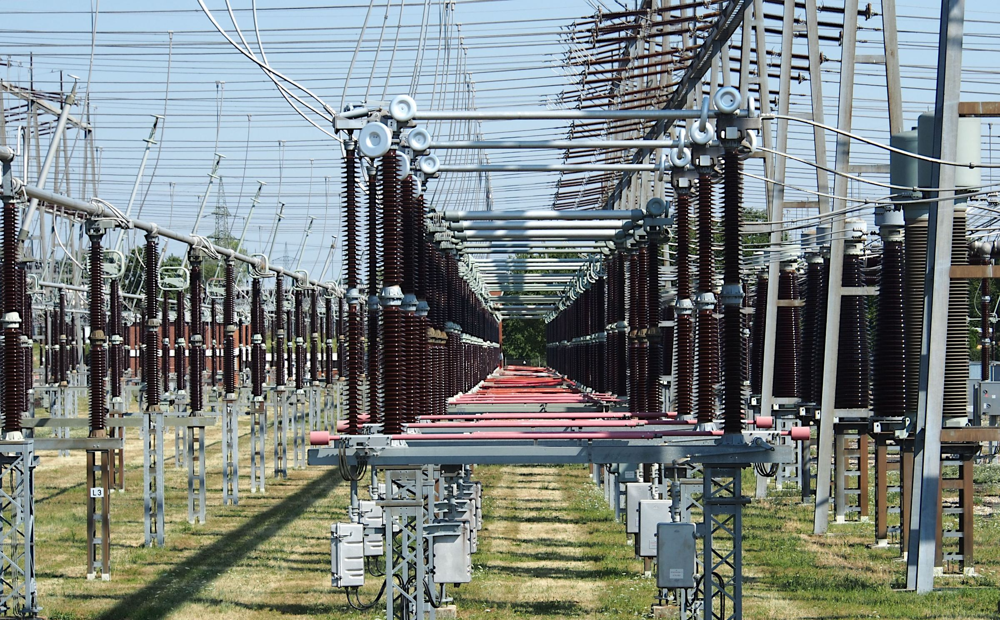

1. Computer Science and Engineering
 © Picture collected from wikipedia (CSE)
© Picture collected from wikipedia (CSE)
Computer science and engineering (CSE) or Computer Science (CS) also integrated as Electrical engineering and Computer Science (EECS) in some universities, is an academic program at many universities which comprises approaches of computer science and computer engineering. There is no clear division in computing between science and engineering, just like in the field of materials science and engineering. However, some classes are historically more related to computer science (e.g. data structures and algorithms), and other to computer engineering (e.g. computer architecture). CSE is also a term often used in Europe to translate the name of technical or engineering informatics academic programs. It is offered in both undergraduate as well postgraduate with specializations.
Academic Courses
Academic programs vary between colleges, but typically include a combination of topics in computer science,computer engineering, and electrical engineering. Undergraduate courses usually include programming, algorithms and data structures, computer architecture, operating systems, computer networks, parallel computing, embedded systems, algorithms design, circuit analysis and electronics, digital logic and processor design, computer graphics, scientific computing, software engineering, database systems, digital signal processing, virtualization, computer simulations and games programming. CSE programs also include core subjects of theoretical computer science such as theory of computation, numerical methods, machine learning, programming theory and paradigms.[2] Modern academic programs also cover emerging computing fields like image processing, data science, robotics, bio-inspired computing, computational biology, autonomic computing and artificial intelligence.[3] Most CSE programs require introductory mathematical knowledge, hence the first year of study is dominated by mathematical courses, primarily discrete mathematics, mathematical analysis, linear algebra, probability, and statistics, as well as the introduction to physics and electrical and electronic engineering.[1][4] Students usually also have the opportunity to choose one social science subject.
| Serial | Department | Seats |
| 1 | Computer Science and Engineering (CSE) | 120 |
| 2 | Chemical Engineering (ChE) | 20 |
| 3 | Civil Engineering (CE) | 120 |
| 4 | Electrical and Electronic Engineering (EEE) | 120 |
| 5 | Food Engineering (FE) | 20 |
| 6 | Textile Engineering (TE) | 120 |
| 7 | Mechanical Engineering (ME) | 120 |
| 8 | Indrustrial and Production Engineering (IPE) | 30 |
| 9 | Materials and Metallurgical Engineering (MME) | 30 |
| 10 | Architure (ARCH) | 30 |
| Total | 730 |
2. Mechanical Engineering
 © Picture collected from Google (ME)
© Picture collected from Google (ME)
Mechanical engineering is the study of physical machines that may involve force and movement. It is an engineering branch that combines engineering physics and mathematics principles with materials science, to design, analyze, manufacture, and maintain mechanical systems.[1] It is one of the oldest and broadest of the engineering branches. Mechanical engineering requires an understanding of core areas including mechanics, dynamics, thermodynamics, materials science, design, structural analysis, and electricity. In addition to these core principles, mechanical engineers use tools such as computer-aided design (CAD), computer-aided manufacturing (CAM), computer-aided engineering (CAE), and product lifecycle management to design and analyze manufacturing plants, industrial equipment and machinery, heating and cooling systems, transport systems, motor vehicles, aircraft, watercraft, robotics, medical devices, weapons, and others.[2][3] Mechanical engineering emerged as a field during the Industrial Revolution in Europe in the 18th century; however, its development can be traced back several thousand years around the world. In the 19th century, developments in physics led to the development of mechanical engineering science. The field has continually evolved to incorporate advancements; today mechanical engineers are pursuing developments in such areas as composites, mechatronics, and nanotechnology. It also overlaps with aerospace engineering, metallurgical engineering, civil engineering, structural engineering, electrical engineering, manufacturing engineering, chemical engineering, industrial engineering, and other engineering disciplines to varying amounts. Mechanical engineers may also work in the field of biomedical engineering, specifically with biomechanics, transport phenomena, biomechatronics, bionanotechnology, and modelling of biological systems.
History
The application of mechanical engineering can be seen in the archives of various ancient and medieval societies. The six classic simple machines were known in the ancient Near East. The wedge and the inclined plane (ramp) were known since prehistoric times.[4] Mesopotamian civilization is credited with the invention of the wheel by several, mainly old sources.[5][6][7] However, some recent sources either suggest that it was invented independently in both Mesopotamia and Eastern Europe or credit prehistoric Eastern Europeans with the invention of the wheel[8][9][10][11] The lever mechanism first appeared around 5,000 years ago in the Near East, where it was used in a simple balance scale,[12] and to move large objects in ancient Egyptian technology.[13] The lever was also used in the shadoof water-lifting device, the first crane machine, which appeared in Mesopotamia circa 3000 BC.[12] The earliest evidence of pulleys date back to Mesopotamia in the early 2nd millennium BC.[14] The Sakia was developed in the Kingdom of Kush during the 4th century BC. It relied on animal power reducing the tow on the requirement of human energy.[15] Reservoirs in the form of Hafirs were developed in Kush to store water and boost irrigation.[16] Bloomeries and blast furnaces were developed during the seventh century BC in Meroe.[17][18][19][20] Kushite sundials applied mathematics in the form of advanced trigonometry.[21][22] The earliest practical water-powered machines, the water wheel and watermill, first appeared in the Persian Empire, in what are now Iraq and Iran, by the early 4th century BC.[23] In ancient Greece, the works of Archimedes (287–212 BC) influenced mechanics in the Western tradition. The geared Antikythera mechanisms was an Analog computer invented around the 2nd century BC.[24] In Roman Egypt, Heron of Alexandria (c. 10–70 AD) created the first steam-powered device (Aeolipile).[25] In China, Zhang Heng (78–139 AD) improved a water clock and invented a seismometer, and Ma Jun (200–265 AD) invented a chariot with differential gears. The medieval Chinese horologist and engineer Su Song (1020–1101 AD) incorporated an escapement mechanism into his astronomical clock tower two centuries before escapement devices were found in medieval European clocks. He also invented the world's first known endless power-transmitting chain drive.[26] The cotton gin was invented in India by the 6th century AD,[27] and the spinning wheel was invented in the Islamic world by the early 11th century,[28] Dual-roller gins appeared in India and China between the 12th and 14th centuries.[29] The worm gear roller gin appeared in the Indian subcontinent during the early Delhi Sultanate era of the 13th to 14th centuries.[30] During the Islamic Golden Age (7th to 15th century), Muslim inventors made remarkable contributions in the field of mechanical technology. Al-Jazari, who was one of them, wrote his famous Book of Knowledge of Ingenious Mechanical Devices in 1206 and presented many mechanical designs. In the 17th century, important breakthroughs in the foundations of mechanical engineering occurred in England and the Continent. The Dutch mathematician and physicist Christiaan Huygens invented the pendulum clock in 1657, which was the first reliable timekeeper for almost 300 years, and published a work dedicated to clock designs and the theory behind them.[31][32] In England, Isaac Newton formulated Newton's Laws of Motion and developed the calculus, which would become the mathematical basis of physics.
Newton was reluctant to publish his works for years, but he was finally persuaded to do so by his colleagues, such as Edmond Halley. Gottfried Wilhelm Leibniz, who earlier designed a mechanical calculator, is also credited with developing the calculus during the same time period.[33] During the early 19th century Industrial Revolution, machine tools were developed in England, Germany, and Scotland. This allowed mechanical engineering to develop as a separate field within engineering. They brought with them manufacturing machines and the engines to power them.[34] The first British professional society of mechanical engineers was formed in 1847 Institution of Mechanical Engineers, thirty years after the civil engineers formed the first such professional society Institution of Civil Engineers.[35] On the European continent, Johann von Zimmermann (1820–1901) founded the first factory for grinding machines in Chemnitz, Germany in 1848. In the United States, the American Society of Mechanical Engineers (ASME) was formed in 1880, becoming the third such professional engineering society, after the American Society of Civil Engineers (1852) and the American Institute of Mining Engineers (1871).[36] The first schools in the United States to offer an engineering education were the United States Military Academy in 1817, an institution now known as Norwich University in 1819, and Rensselaer Polytechnic Institute in 1825. Education in mechanical engineering has historically been based on a strong foundation in mathematics and science.[37]
3. Electrical Engineering
© Picture collected from wikipedia (EEE)Electrical engineering is an engineering discipline concerned with the study, design, and application of equipment, devices, and systems which use electricity, electronics, and electromagnetism. It emerged as an identifiable occupation in the latter half of the 19th century after the commercialization of the electric telegraph, the telephone, and electrical power generation, distribution, and use. Electrical engineering is divided into a wide range of different fields, including computer engineering, systems engineering, power engineering, telecommunications, radio-frequency engineering, signal processing, instrumentation, photovoltaic cells, electronics, and optics and photonics. Many of these disciplines overlap with other engineering branches, spanning a huge number of specializations including hardware engineering, power electronics, electromagnetics and waves, microwave engineering, nanotechnology, electrochemistry, renewable energies, mechatronics/control, and electrical materials science.[a] Electrical engineers typically hold a degree in electrical engineering, electronic or electrical and electronic engineering. Practicing engineers may have professional certification and be members of a professional body or an international standards organization. These include the International Electrotechnical Commission (IEC), the Institute of Electrical and Electronics Engineers (IEEE) and the Institution of Engineering and Technology (IET, formerly the IEE). Electrical engineers work in a very wide range of industries and the skills required are likewise variable. These range from circuit theory to the management skills of a project manager. The tools and equipment that an individual engineer may need are similarly variable, ranging from a simple voltmeter to sophisticated design and manufacturing software.
History
Electricity has been a subject of scientific interest since at least the early 17th century. William Gilbert was a prominent early electrical scientist, and was the first to draw a clear distinction between magnetism and static electricity. He is credited with establishing the term "electricity".[1] He also designed the versorium: a device that detects the presence of statically charged objects. In 1762 Swedish professor Johan Wilcke invented a device later named electrophorus that produced a static electric charge.[2]. By 1800 Alessandro Volta had developed the voltaic pile, a forerunner of the electric battery.
In the 19th century, research into the subject started to intensify. Notable developments in this century include the work of Hans Christian Ørsted, who discovered in 1820 that an electric current produces a magnetic field that will deflect a compass needle; of William Sturgeon, who in 1825 invented the electromagnet; of Joseph Henry and Edward Davy, who invented the electrical relay in 1835; of Georg Ohm, who in 1827 quantified the relationship between the electric current and potential difference in a conductor; of Michael Faraday, the discoverer of electromagnetic induction in 1831; and of James Clerk Maxwell, who in 1873 published a unified theory of electricity and magnetism in his treatise Electricity and Magnetism.[3] In 1782, Georges-Louis Le Sage developed and presented in Berlin probably the world's first form of electric telegraphy, using 24 different wires, one for each letter of the alphabet. This telegraph connected two rooms. It was an electrostatic telegraph that moved gold leaf through electrical conduction. In 1795, Francisco Salva Campillo proposed an electrostatic telegraph system. Between 1803 and 1804, he worked on electrical telegraphy, and in 1804, he presented his report at the Royal Academy of Natural Sciences and Arts of Barcelona. Salva's electrolyte telegraph system was very innovative though it was greatly influenced by and based upon two discoveries made in Europe in 1800—Alessandro Volta's electric battery for generating an electric current and William Nicholson and Anthony Carlyle's electrolysis of water.[4] Electrical telegraphy may be considered the first example of electrical engineering.[5] Electrical engineering became a profession in the later 19th century. Practitioners had created a global electric telegraph network, and the first professional electrical engineering institutions were founded in the UK and the US to support the new discipline. Francis Ronalds created an electric telegraph system in 1816 and documented his vision of how the world could be transformed by electricity.[6][7] Over 50 years later, he joined the new Society of Telegraph Engineers (soon to be renamed the Institution of Electrical Engineers) where he was regarded by other members as the first of their cohort.[8] By the end of the 19th century, the world had been forever changed by the rapid communication made possible by the engineering development of land-lines, submarine cables, and, from about 1890, wireless telegraphy. Practical applications and advances in such fields created an increasing need for standardized units of measure. They led to the international standardization of the units volt, ampere, coulomb, ohm, farad, and henry. This was achieved at an international conference in Chicago in 1893.[9] The publication of these standards formed the basis of future advances in standardization in various industries, and in many countries, the definitions were immediately recognized in relevant legislation.[10] During these years, the study of electricity was largely considered to be a subfield of physics since early electrical technology was considered electromechanical in nature. The Technische Universität Darmstadt founded the world's first department of electrical engineering in 1882 and introduced the first-degree course in electrical engineering in 1883.[11] The first electrical engineering degree program in the United States was started at Massachusetts Institute of Technology (MIT) in the physics department under Professor Charles Cross, [12] though it was Cornell University to produce the world's first electrical engineering graduates in 1885.[13] The first course in electrical engineering was taught in 1883 in Cornell's Sibley College of Mechanical Engineering and Mechanic Arts.[14]